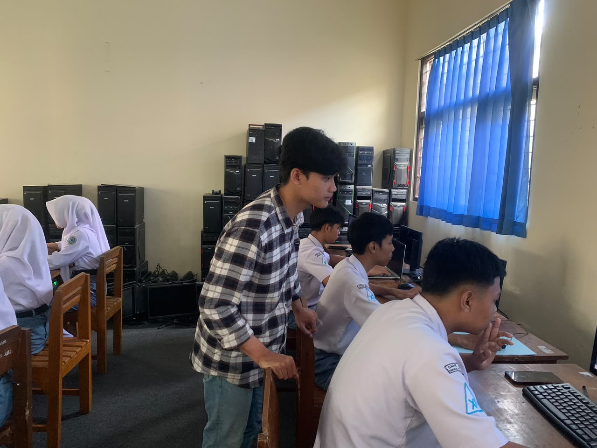
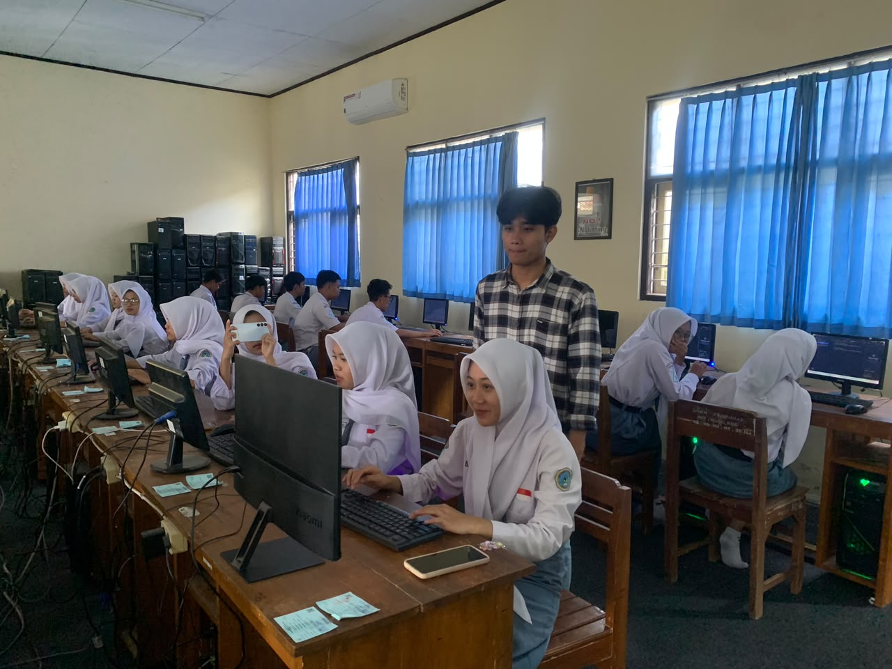
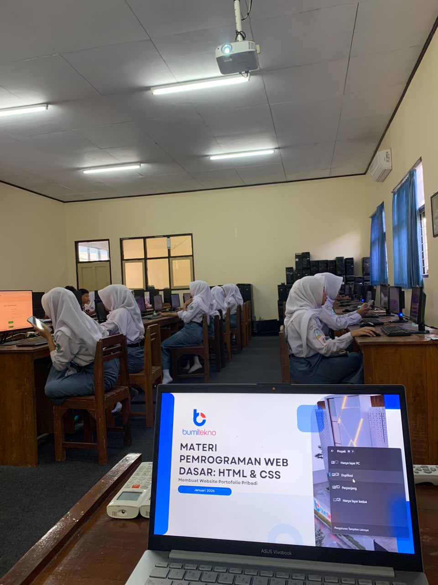
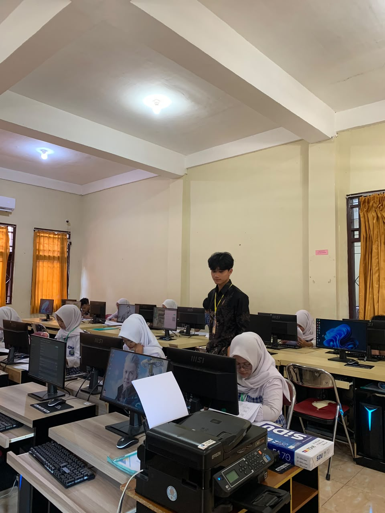
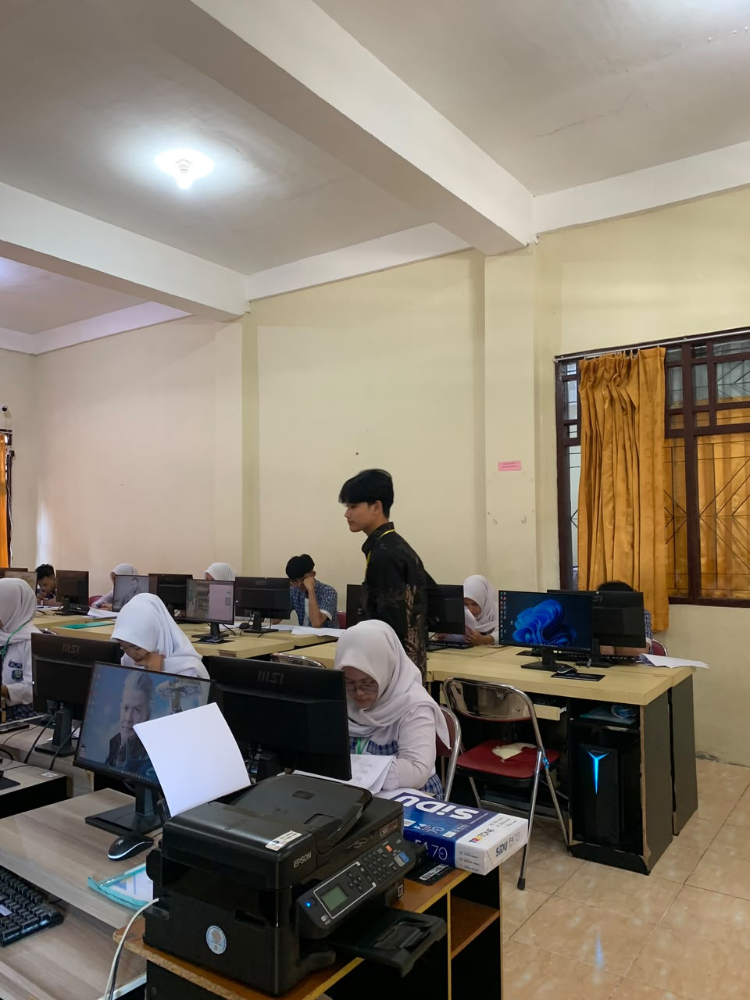
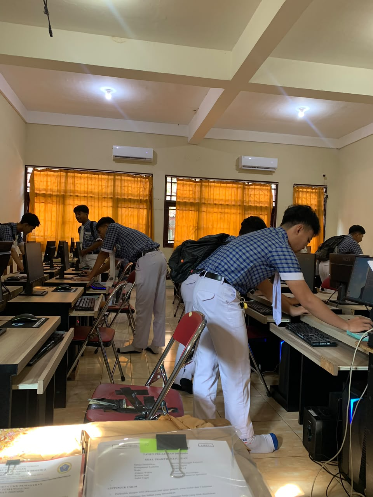

Nama Klien / Website Satu
Optimasi technical SEO dan konten selama 3 bulan, trafik organik naik signifikan lewat perbaikan struktur dan keyword targeting.
IT · SEO Specialist · Web & Technical Support
Saya Indra Aditya, mahasiswa S1 Sistem Informasi Universitas Terbuka semester 7 dengan latar belakang Teknik Komputer dan Jaringan. Saat ini berperan sebagai SEO Specialist di PT Bumi Tekno Indonesia, mengurus technical SEO, performa website, dan troubleshooting harian.
✦ Profil
Saya Mahasiswa S1 Sistem Informasi Universitas Terbuka semester 7 dengan latar belakang Teknik Komputer dan Jaringan, serta pengalaman sebagai SEO Specialist di PT Bumi Tekno Indonesia sejak Januari 2025. Memiliki kemampuan dalam website management, technical SEO, troubleshooting, CMS, cPanel, hosting, HTML, CSS, JavaScript, PHP, dan Bootstrap. Terbiasa menganalisis masalah teknis, mengoptimalkan performa website, dan mempelajari teknologi baru.
✦ Pengalaman Kerja
PT Bumi Tekno Indonesia
✦ Pendidikan
Universitas Terbuka
Semester 7
SMK Negeri 1 Pringsurat
2019 – 2022
✦ Keahlian & Kompetensi
✦ Portofolio Kerjaan
Beberapa contoh website klien yang saya bangun, kelola, dan optimasi dari sisi SEO. Klik kartu untuk melihat website aslinya.
✦ Portofolio SEO
Beberapa hasil optimasi SEO yang saya kerjakan, dilihat dari data Google Search Console / GA4.
Optimasi technical SEO dan konten selama 3 bulan, trafik organik naik signifikan lewat perbaikan struktur dan keyword targeting.
Perbaikan Core Web Vitals dan internal linking membantu keyword utama naik ke halaman pertama Google.
Riset kompetitor dan perbaikan metadata mendorong CTR dari hasil pencarian naik dalam waktu singkat.
✦ Portofolio Mengajar
Dokumentasi kegiatan mengajar di dua sekolah kejuruan yang pernah saya kunjungi.
Berbagi materi seputar pengembangan website kepada siswa jurusan RPL.



Menilai Ujian Praktik Kelulusan Siswa SMK N 2 Temanggung.


